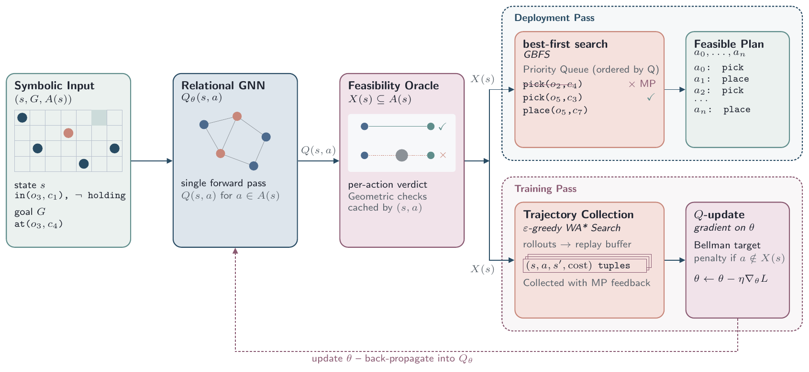
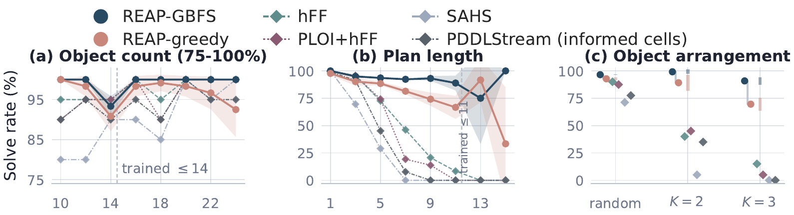

Accepted at the Conference on Robot Learning (CoRL) 2026
Code, trained weights, datasets, baseline reimplementations and the MuJoCo environments will be made available shortly.
REAP learns a Q-value function that scores symbolic actions by anticipating which will be geometrically feasible. The function can drive a greedy policy or guide best-first search at deployment. By skipping motion-planner checks on actions the policy deems infeasible, REAP reduces motion-planning overhead by an order of magnitude across five robot rearrangement domains.
Robotic rearrangement tasks require planning sequences of actions that fulfill high-level specifications while also being geometrically feasible. Symbolic abstractions make the combinatorial structure of rearrangement tasks tractable, but they usually do not fully capture the geometric constraints that determine which actions a motion policy can realize. This is due to the complexity of expressing the underlying geometric feasibility constraints in the symbolic model. We propose REAP (Rearrangement with Elicited Action Preconditions), a framework in which a relational graph neural network heuristic is learned over a simple symbolic abstraction. A motion policy serves as a supervisor that elicits the hidden geometric preconditions of the problem during training. Deployed with greedy best-first search, the learned heuristic generalizes out-of-distribution along object count, plan length, and object arrangement. Compared to classical heuristic search and TAMP baselines on the same instances, REAP requires approximately an order of magnitude fewer motion policy queries because the heuristic anticipates which low-level actions are geometrically feasible. We show that the same architecture, training recipe, and search procedure adapt to various robotic rearrangement domains.
Each video shows REAP’s learned policy deployed under greedy best-first search, solving one in-distribution and one out-of-distribution instance per environment (Access-19 is shown in-distribution only). The same architecture and training loop are used across all five domains; only the PDDL specification and scene generator change.
Adapted from Wang et al., ICAPS 2022.
Adapted from Ait Bouhsain et al., HAL preprint 2025.
From Ait Bouhsain et al., HAL preprint 2025.
Inspired by Kulshrestha & Qureshi, CoRL 2023.

Each environment is encoded as a coarse PDDL/STRIPS planning problem with a small set of predicates (cell occupancy, gripper state, support relations) and action schemas for picking and placing. The abstraction is deliberately a loose over-approximation: in most domains, almost every pick or place is symbolically applicable, but only a small subset is geometrically realizable at any given state. REAP’s contribution is learning to predict that subset without consulting the motion planner.
A relational GNN maps state-action pairs (s, a) to scalar Q-values. Taken together, the Q-values define a policy that selects actions while anticipating their geometric feasibility. States and goals are encoded as atoms, so a single architecture generalizes across instances with different numbers of objects and cells.
During training, an ε-greedy weighted-A* search collects rollouts and consults a motion planner for the feasibility of each selected action. Infeasible actions incur a cost penalty, so the learned heuristic anticipates which symbolically applicable actions will fail the geometric check.
At test time, a greedy best-first search uses the learned Q-values to order successors and consults the motion planner only for the most promising candidates. Feasibility verdicts are cached, so a single rejection prunes the corresponding sub-tree.
On the open-tabletop suite, REAP-GBFS solves substantially more problems than the classical search baselines (BrFS, hFF), an integrated TAMP planner (PDDLStream), and three learning-based methods we reimplemented against the same action space and the same feasibility oracle — SAHS, PLOI and BT-h — while making roughly an order of magnitude fewer motion-planner queries per solved plan.
The comparison against SAHS is the sharpest: it searches about as efficiently as REAP (1.31 versus 1.27 expansions per plan step), so the two explore the symbolic space equally well. The entire difference is what gets proposed — and whether the motion planner accepts it.
| Method | Solve (%) | MP / plan [med.] | Checks / exp. | Exp./steps | Time (s) |
|---|---|---|---|---|---|
| REAP-GBFS | 95.9 ± 0.5 | 15.5 [3.3] | 1.85 | 1.27 | 3.6 |
| REAP-greedy | 89.4 ± 1.5 | 5.4 [3.0] | — | — | 1.8 |
| BrFS | 56.7 | 148.8 [12.0] | 7.01 | 7.26 | 19.5 |
| hFF | 76.7 | 179.0 [1.0] | 5.04 | 3.62 | 25.4 |
| SAHS (Kim & Shimanuki, 2019) | 57.3 | 3002.9 [2962] | — | 1.31 | 59.3 |
| PLOI + hFF (Silver et al., 2021) | 73.7 | 247.4 [2.0] | 4.09 | 8.74 | 42.2 |
| PLOI + BrFS | 54.3 | 132.2 [2.0] | 3.56 | 12.65 | 23.5 |
| BT-h (Cieślar et al., 2025), given the plan ordering | 81.7 | 28.5 [3.0] | — | 4.25 | 4.5 |
| PDDLStream (best of four configurations) | 64.3 | 23.6 [1.0] | — | — | 17.2 |
REAP’s learned heuristic generalizes out-of-distribution along several axes. On open-tabletop, the policy trained on at most 14 objects with plan lengths up to 11 reaches 95.9% solve rate under REAP-GBFS across the full 300-problem suite (up to 24 objects, plan lengths up to 15).

| Environment | Setting | Solve (%) | Mean exp./steps | MP / plan |
|---|---|---|---|---|
| Confined-Shelf | In-distribution (monotone) | 100.0 | 1.00 | 7.0 |
| OOD: 16 objects, non-monotone | 100.0 | 1.00 | 11.2 | |
| Multi-Level Shelf | In-distribution (1–5 blockers) | 100.0 | 1.00 | 5.5 |
| OOD (4–10 blockers) | 100.0 | 1.01 | 7.3 | |
| Access-19 | In-distribution (≤ 14 blockers) | 98.0 | 1.03 | 7.8 |
| 3D Block Stacking | In-distribution (1–8 blocks) | 100.0 | 1.00 | 7.1 |
| OOD (combined, 6–13 blocks) | 100.0 | 1.16 | 22.2 |
Generalization within a domain holds; generalization across domain specifications does not. The symbolic abstraction (predicates, action schemas) is hand-crafted per environment, and REAP learns the heuristic over that fixed vocabulary. Within a domain, REAP scales to denser scenes and longer plans than seen during training, but a single goal-conditioned policy does not solve Access-19 with 18 blockers. The obstacle is not horizon — plan extraction succeeds at 100% for plans of up to 30 steps — but subgoal decomposition: the task requires moving blockers away from their goal positions before restoring them, and two policies trained one per phase and executed in sequence do solve it. Training also requires a few hundred motion-planner-supervised episodes per environment, which is cheaper than running motion planning at deployment but is still not free.